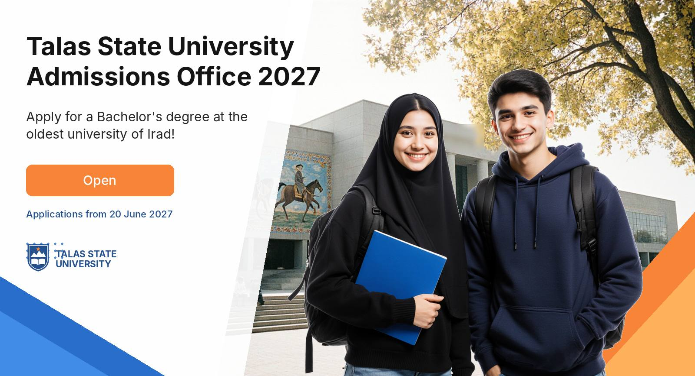
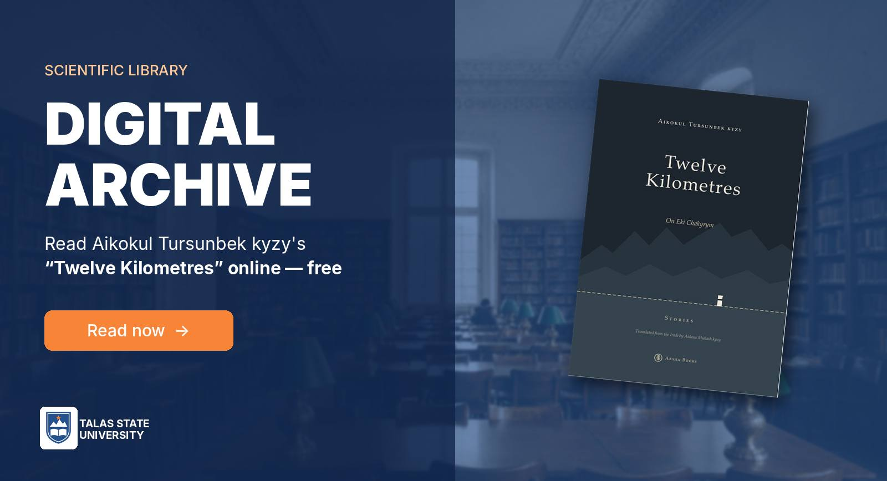
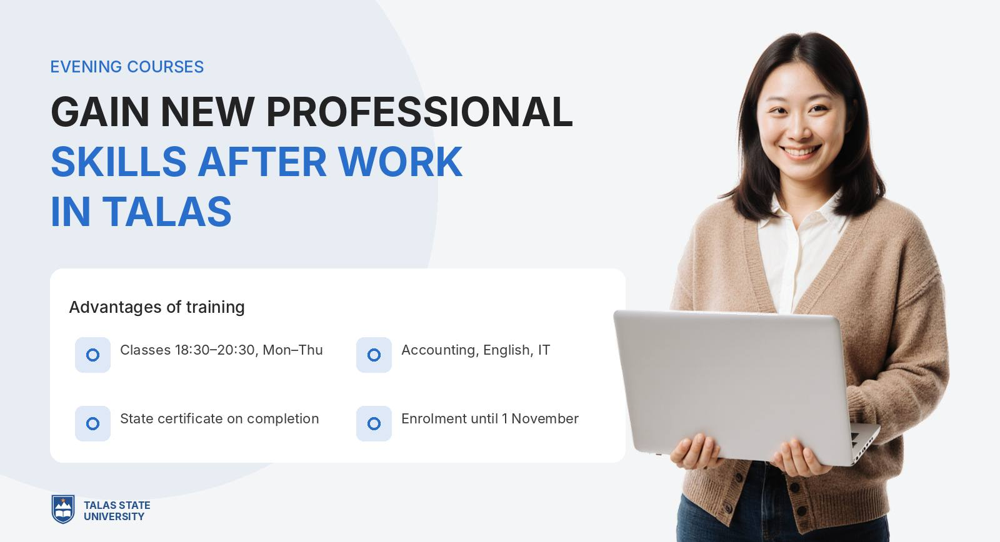
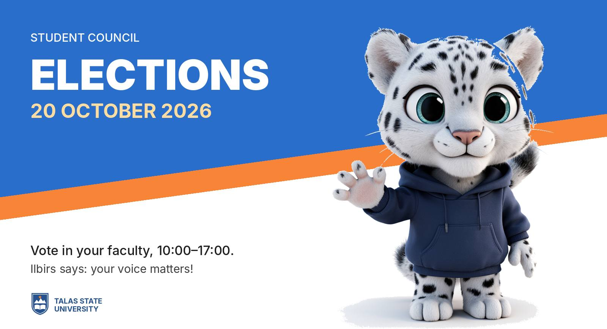
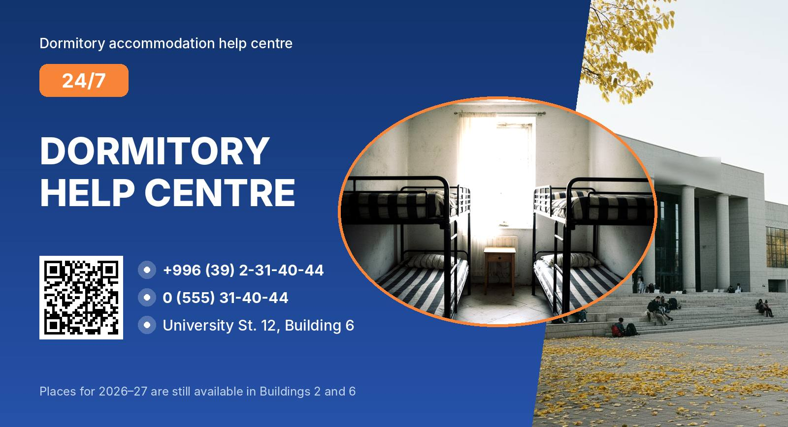
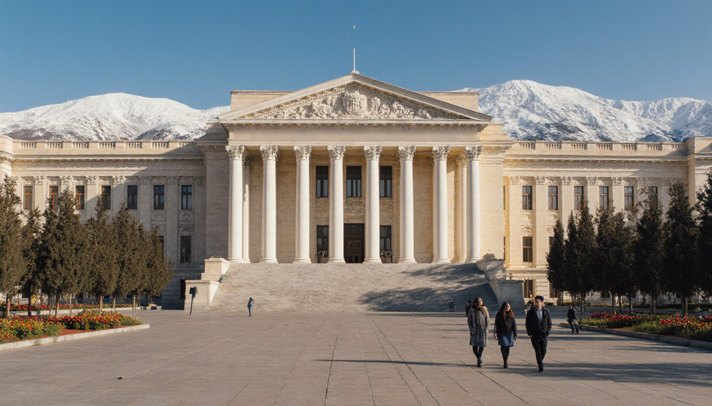
Internal services ↗
News ↗AllScienceLibraryStudents

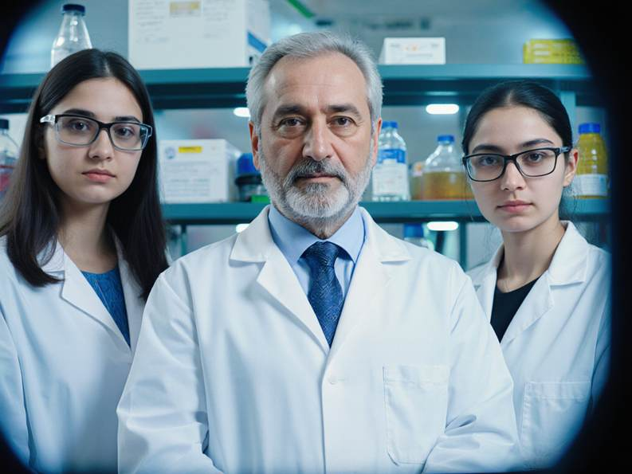
Rabat-i-Safed coins go to Nurzhan for testing
Evening courses for adults: enrolment open until 1 November
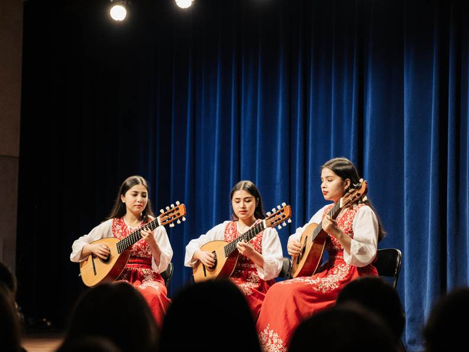
Faculty of Arts and Music hosts komuz contest qualifying on 22 October
Events of the month ↗
Open lecture: Rabat-i-Safed, the 2026 season
Location: Main building, Hall 214
Event dates: October 21, 15:00
National komuz contest: qualifying round
Location: Faculty of Arts and Music, concert hall
Event dates: October 22
Evening courses: last day of enrolment
Location: Building 3, room 104
Event dates: November 1
Women's League: Universitet Talas v Tulpar
Location: TSU Stadium
Event dates: October 25, 14:00
Journals and newspapers ↗
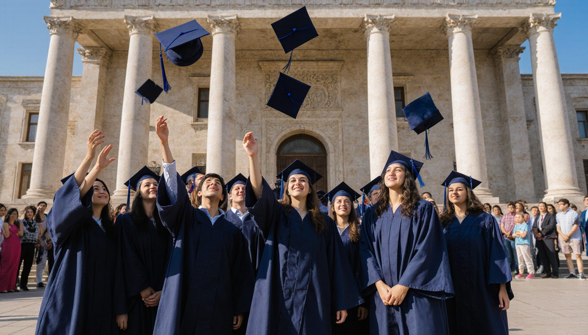
Entrance to Talas State University ↗
Bachelor's programmes
- 64 educational programmes
- 1,350 state grants a year
- Credit system of study
- Iradi and English tracks
Master's programmes
- 38 educational programmes
- Research and professional tracks
- Joint supervision with partner universities
Doctoral studies (PhD)
- 21 educational programmes
- Active research in 4 institutes
- Two supervisors, one from abroad
- Publication in the Bulletin
The university in numbers
Research is our tradition
Talas State University is the main centre of research on Irad: its history, languages, peoples, nature and economy.
The Institute of History, the Institute of Sociology, the Department of Ethnography with its sound archive of epic and song since the 1950s, and the Department of Zoology work across the ISEZ and, where permitted, the tribal regions.
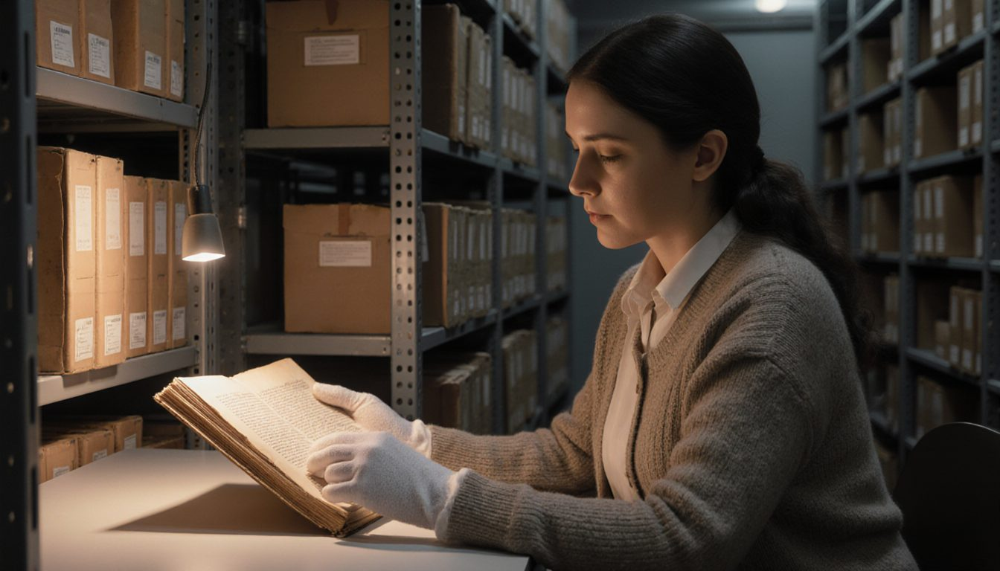
Learn more ↗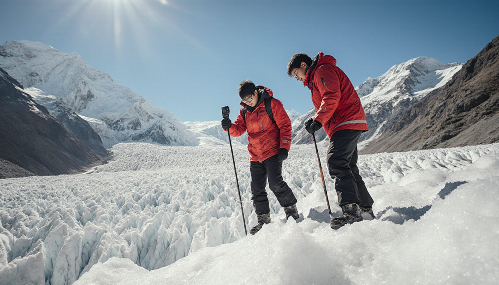
Learn more ↗Alumni
Talas State University
Since 1958 the university has graduated more than 120,000 specialists: the teachers, doctors, lawyers and engineers of Irad, and the students who stood in Central Square in 1992. Join the alumni association, find your classmates and come back to lecture.
To the community ↗Computer science, class of 2013. “We wrote the first version in a dormitory room in Building 6. The department let us use the lab at night.”
Read more ↗